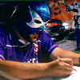
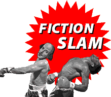

Home Blogs Fiction Slam September
Work in Progress
*WINNER*
Sandra
"I don't know, Luke, it's kind of disturbing."
"What's so disturbing? It's a nice color scheme."
"Yeah, but...."
"And it looks peaceful."
"Yeah, but don't you think it looks peaceful because the guy looks dead?" Despite the soothing blue and green tones in the painting, the only figure in it was lying face down on the floor among an ominous looking mist. I pressed closer to Luke, wrapping my hands around his arm.
Luke turned to look down at me, scowling. "Carol, he isn't dead, he's sleeping," he said, not trying to disguise his contempt for my opinion. He looked back at the painting. "It's obviously the artist's statement about a dream state. I think it's peaceful and it will make a nice addition to the nursery."
"I just don't know..." I tried again.
Luke broke away, raising his arm to get the attention of the gallery owner. Obviously, the decision was made.
* * *
I washed my hands for the fifth time since breakfast and went upstairs (slowly) to the nursery. These days, it's the only quiet place in the house, between the construction going on in Luke's study and the catering crew getting ready for the party tonight.
I opened the window and felt the breeze from outside. It smelled wonderful, the way lilacs smell when the air is perfectly still. I giggled, thinking about the contradiction.
"How are you today, my beautiful wife?"
I started, choking the giggle off as I jerked, and turned as quickly as my lumbering body would let me. Luke was standing in the doorway, watching me.
"Oh, you... you startled me!" I said, recovering my breath.
He approached, smiling. "I missed you downstairs." He took my hands gently. "I figured you would be up here. You spend a lot of time in this room now. Are you getting excited about the baby coming?"
"Of course," I lied. "Any day now!" I hoped I didn't sound too shrill.
He looked at me and his expression softened, and it reminded me of when we were first together and he would tell me I was the whole reason for his existence. I was so in love with him then, so happy and fulfilled, so swept off my feet. Now, all I could think of was that my feet would swell by 8pm if I was going to have to wear shoes that matched my dress. For fun, maybe later I would get Julia and Lance involved in placing bets as to exactly which time it would happen.
I smiled back. "What?" I said playfully. "What are you thinking?"
"You look lovely, Carol. I sometimes don't tell you how enchanting you are." He reached up and touched my hair. "When David comes today, tell him to leave your hair down and put flowers in it or something. You look so attractive when your hair is down around your shoulders."
"Luke, I... I'm wearing a heavy dress... I'll burn up if I wear my hair down."
His expression sharpened then, ever so slightly, and he met my eyes. "Carol, I want our guests to be as enchanted by you as I am. Can't you just do this one thing for me?"
I sighed. "Sure, honey. I will."
He smiled. "That's my girl."
* * *
The party went as well as can be expected. Afterwards, I had to have a long shower, not only to wash off the makeup and the sweat, but to wash away the memory of Luke's associates touching my belly and talking to me slowly and loudly, like I was retarded. "I'M SURE YOU'LL MAKE A WON-DER-FUL MO-THER!" It's almost funny to think about it in retrospect, but at the time I felt so humiliated and diminished, I just wanted to cry. Only Julia seemed to pick up on my distress, and promised to drink a lot so I could live vicariously through her. I told her my Sprite was really champagne, and we both laughed. I think it was the only real laugh of the evening.
The next morning I was again in the nursery, staring out the window, and feeling the back of my neck prickle. It was the picture. I felt it watching me. I know it sounds ridiculous, but I could feel it thinking about me.
I turned around and faced it. With all the wood-framed windows and neutral crib, it was a splash of color that brightened the room up. That is, if you didn't look too closely at the figure in the painting. If you did, you'd swear that clouds had just passed over the sun. The only time I felt cold was when I looked at that painting. Staring at it now, I had to hug my arms close to stop the shivering.
"Are you coming down for lunch? I've been calling you for the last fifteen minutes!"
Luke was at the door.
"Oh, sorry, honey. I guess I was distracted."
He moved around the door and looked up at the painting, grinning broadly. "Aha! It's growing on you now, isn't it? See, I told you." He opened his arms wide and enfolded me in his embrace. I went, grateful for the warmth.
"Yeah," I said weakly.
"I knew you'd like it eventually. Don't I know everything my Carol needs?" He paused, as if waiting for an answer. "Why don't you come down to lunch now? David has prepared something really nice for us. We can have it on the terrace - it's a gorgeous day."
"Okay," I agreed. "I just need to... wash my hands."
* * *
The birth of Joshua was unexpectedly easy. He weighed in at eight pounds, eight ounces, and Luke's favorite thing to say was, "Can you believe such a big boy came out of my tiny little wife?" There were guffaws and cigars passed (but not smoked), and everyone mercifully left me alone for the evening.
Julia lingered, holding my hand. "I can go if you need me too, Carol. You look so tired."
I smiled. "No, Jules. I'm not tired, actually. I feel pretty good! I'm just... " I trailed off, looking at her.
She understood. "I worry about you, Care. You seem so... I don't know... listless these days. Are you..." she actually chewed her lip here, "happy?"
The word hung in the air between us for a moment, as if she had just said something nasty.
"Yes," I lied.
Whether it was the flat quality of my voice or the utter lie on my face, she wasn't buying it. She looked down quickly, biting her lip again. I think she was actually misting up.
"I want to help," she whispered.
"I don't think you can," I answered, as honestly as I could.
* * *
Back at home, I was having a hard time getting into the role of "MO-THER", but not for the lack of trying. I was spending all day in the nursery, watching our son sleep, changing his diapers, straightening up.
"It's just post-partum depression," said Luke as I cuddled against him that evening. "You have given me a beautiful son, Carol. You should feel very proud about that. If you want more time to rest, I can hire a nanny to take care of Joshua."
"No, Luke, it's OK. I... I need to be around him, to feel more connection."
"My poor darling," he said, and kissed my head.
* * *
My one-month follow-up with the doctor did not go well. He looked at me over his glasses, and sternly informed me that I was losing too much weight.
"You're already very thin, Carol. You aren't on a diet, are you?"
"No, just eating normally."
He frowned. "I'm prescribing a diet for you. I want you to follow it to the letter. I'll be speaking with your husband later today to make sure he knows about it, too. It's important that you eat a certain number of calories per day, Carol, or you are going to waste away. Are you hearing me?"
I had been letting my gaze wander, but I brought it back to him. "Absolutely, doctor. Whatever you say."
* * *
Every time I touched Joshua I needed to wash my hands. Luke made a joke that I was so thin because of all the exercise I was doing at the sink. I have to do something about that picture. It just doesn't look right in the room. Joshua is too quiet for a baby. Babies should cry more, shouldn't they?
* * *
Luke is furious. I'm not lactating the way I should. The doctor thinks it's because I'm too thin, and keeps harping on that stupid diet. Luke is going to hire a full-time chef. "I will not have my boy bottle fed when he could be breast fed. C'mon Carol!" I feel like a child myself sometimes. Eat this, do that. And all the time that picture is staring down at me, mocking me, sneering at my failure to be a good mother.
* * *
So I did it. I ripped that picture down from its hook and took it outside. I used the pruning shears and I cut it into small pieces, then I put those on the bar-be-que and set the whole thing alight. I watched until every part of it was ashes, and then I swept them off the grill and buried them in the trees behind our garden. I was dripping with sweat by the time I came back to the house, and Luke was insane with worry. I had left Joseph in the crib, and if David hadn't come back, something could have happened, and I should be a better MO-THER, and things would have to change.
That was nothing compared to what happened when he found out the picture was missing. I was asked if I knew how much that cost and whether I was of sound mind or not. I answered no, and he seemed to think I was joking.
* * *
Those events, from so many months ago, seem like a dream now. Luke is remarried, and they kept custody of Joshua. I like Erin - she has proven to be such a good mom. Julia tells me that she wasn't able to have children of her own, so I'm glad she is able to give her love to Joshua. He certainly deserves it.
I moved in with Julia and Lance, onto their farm. If I would have known how much fun I'd have getting up at the crack of dawn and working like a slave all day, I would have done this a lot sooner. They gave me the mother-in-law cottage on the other side of the actual homestead, and I clean it, fix it up, and cook all meals myself. I even put on weight, which should please that annoying doctor.
Best of all, there's not a single piece of artwork on the walls, unless you count the crochet cat mailbag Julia made for me as a housewarming present. I'm just not a big fan of wall art, I guess.
I'll leave that to the connoisseurs.

The Sucker
*WINNER*
Smivey
He sold his paintings to CEOs, celebrities and wannabe socialites -- dilettantes who wouldn't recognize a masterpiece if it was painted on their widescreen high-definition TVs. Every Friday afternoon, they'd crowd around his canvases, tilting their heads as if they were admiring his technique, doing whatever they could to hide their confusion. The more inexplicable the painting, the more brilliant they assumed it was. Which meant only one thing: They had to have it.
Of course, they would have rather purchased Simon's paintings in a well-lit gallery than on the gritty street corner where they were currently displayed. But Simon seemed adamant about showing his work in this environment. "My art is about the City of Evil," he'd say, "and there's only one place to experience it: Right in the heart of hell itself."
They always ate that shit up.
Simon knew he wasn't a great artist, yet he played the part masterfully. No matter which painting a customer happened to be admiring, it was always Simon's most prized piece, the one he painted while he was contemplating suicide, or preparing himself for self-castration -- stories about mutilation always guaranteed at least a three-figure sale.
Should somebody seem extremely interested in a painting, Simon might refuse to sell it, explaining that he only painted it for himself and there was no price anyone could pay to make him part with it. Of course, the painting was sold within five minutes, usually after Simon mentioned that he personally inseminated the paint "to give the piece life."
Yes, Simon was gifted. A gifted confidence man. He didn't live in a rat-infested loft, as he led people to believe. His home sat high atop the Hollywood Hills, where every evening he soaked in his hot tub and looked down at the city lights.
Not that Simon didn't work hard for his money. He reserved the last floor of his house for his studio. Each session started the same way: eight blank canvases lined up in a row, waiting to be transformed into priceless works of art. And it didn't take long for the metamorphosis to take place. Simon had his own theory about art: "The more fucked up, the better." He often painted with no concept in mind. And no concern for perspective or realism. Some people labeled it as "abstract impressionism." But to Simon, it was just easy money.
Of course, the paintings wouldn't sell if anyone discovered how quickly they were created. That's why Simon always took a few extra minutes to select a great title. The best titles had absolutely nothing to do with the actual imagery. Sometimes it was just a one-syllable word like "the" or "sigh." Other times, it was an entire convoluted sentence: "There are people who don't make rice before combing their sheep."
Simon's latest creation was a real piece of work. It showed a body lying face down in a room with cylinders coming out of the floor spewing steam. Or was that water? Simon didn't know, and he really didn't care. Just for the hell of it, he painted in some large amoeba-shaped objects. It was a stupid idea, but what was done was done, and he had to move on to the next canvas. But first, he needed a title. He noticed that the objects he just painted looked a lot like maxi pads, so he considered the name "Femme Fatal." But that was just too corny. Instead, he chose a more fitting title, one that was not so much about the painting as it was about the person who would eventually purchase it: "The Sucker."
The next morning, Simon packed all of his latest work -- including "The Sucker" -- into his Hummer and made his way towards downtown Los Angeles. Of course, he couldn't let anyone see him drive up in such a extravagant vehicle. Which is why he had a rusty van waiting for him in a nearby lot. As always, he'd transfer the paintings to the van, and then drive that vehicle down the hill to the corner, spewing smoke all the way.
As Simon's rusty van sputtered and hacked its way down the street, he removed his platinum Rolex from his wrist and glanced at the dial: 11:45. He was running late. If he missed the lunch rush, he'd have to wait until next week to sell his work. And that just wasn't an option.
Simon's foot pressed down on the gas pedal, and the motor responded with a sudden jerk and wheeze. He slammed his foot down harder, and the vehicle finally began to take off, leaving the cars behind him in a thick cloud of exhaust.
He weaved in and out of traffic with no concern for anyone's life but his own. But as his van began to descend the hill, he came to a horrifying realization: The accelerator was stuck and he was starting to lose control.
Immediately, he pushed the clutch down and yanked on the shift lever to get the vehicle out of gear. No such luck. He tried the brake, but the pedal only dropped to the floor as if it were deflated. The van blew through the first intersection just as the light turned red. Simon grabbed for the emergency brake and gave it a yank, but there was no familiar ratcheting sound. Instead, the brake just lifted up and dropped as soon as he let go of the lever.
It was panic time.
Another intersection was approaching fast. And this time the light was red. Trying to turn at this speed would surely result in flipping over the van. But what choice did he have? Simon grabbed the wheel firmly and started to make his turn. As the van's tires screeched and smoked, the smell of burnt rubber mixed with exhaust fumes. Then a tire blew. Before Simon knew what was happening, the van began to tumble down the hill, and Simon's head was slammed into the roof over and over and over.
Then everything went black.
When Simon came to, he was not in a hospital bed, nor in an ambulance racing towards the E.R. He was face down in a strange, yet oddly familiar, room. He lifted his pounding head and saw what seemed like two windows, two windows with obscure, uneven frames. He tried to get to his feet, but nearly fell backward. The floor seemed to be on an incline. As he gained his balance, he became more aware of his surroundings. Silver cylinders were positioned sporadically across the floor, occasionally sputtering out a white mist for no apparent reason at all.
"You've got mail," a voice emanated from somewhere near the far wall. It was a personal computer sitting on a simple brown desk. Simon climbed his way up towards the computer, hoping that the email would have the answers to all his questions. But as he got closer, he began to realize that the desk was only knee high, and the computer was even smaller. Not only that, there was no keyboard or any other way to navigate.
"You've got mail," the computer announced.
"I know, I know, you fucking piece of shit!"
Simon was about to kick the tiny computer across the room when he heard a squishy sound coming from behind him. He turned to discover two amoeba-shaped objects making their way towards him, absorbing everything in their path. They moved so slowly, it seemed like they weren't moving at all. But they were, and it was quite clear that they didn't plan to stop until Simon was no more.
The floor began to rumble and started to lift, causing Simon to lose his balance and fall to the floor.
"What the fuck is happening?" Simon screamed as he desperately clawed at the floor, one amoeba just inches away from his feet.
The floor rumbled again, and the incline increased. Simon felt himself starting to slide. They were so close now, he could smell them: a faint medicine-like odor, the kind you might experience in a hospital. Simon grabbed for one of the cylinders, but scalded his hand. That mist coming out was apparently steam.
"Get me the fuck out of here!" He screamed as he felt a stinging chill on his foot. One of the amoebas had reached its goal. The pain was so intense, it felt like dry ice on bare skin.
"He just started freaking out!" The nurse yelled as the doctor came racing into the ICU.
The little blip on the monitor bounced wildly as Simon's body convulsed to the rhythm. His eyes were wide open, but he couldn't see a thing, or hear the doctor yelling impatiently for an orderly. Not that it mattered. Simon was moving so violently, nobody could get near him. All they could do was stand there and watch him thrashing about, screaming for help through the tubes in his face, begging for mercy, tears rolling down his cheeks. He kicked his thighs under the covers, but the sheets hardly moved. For all that was left of his formerly well-toned legs were two freshly bandaged stumps.
Breathe
Charm
Petey takes the last humidifier from its packaging, fills it with water then
places it on the floor alongside the rest of the humidifiers in his computer
room. Carefully he opens each box of Vicks VapoSteam. He gathers as many as
he can hold with two hands, holds the bottles up to his ear and shakes, listening
to the sound of fluid sloshing safely within the enclosed bottles. ÊHe anticipates the moment when the soothing feeling of opening nasal passages will soon be his. ÊHe strains to read the itsy-bitsy print on the packaging.ÊHis contact lenses are dry making it hard to focus. Ê"What does it matter?" he wonders.ÊThe bottles are opened and the contents are poured into the waiting humidifiers.ÊHe tosses the packaging and instructions for humidifiers and VapoSteam dismissively into the corner of the room.
Petey turns on some music and lays his head down upon one of the beanbags laying on the floor. The whispy fingers of VapoSteam rising and dancing into the air entrance him. He breathes in. He breathes out. Deep breathe...mmm...Vapo...ahhhh...Steam. His nasals open up. His brain begins to numb.ÊEyelids grow heavy in his VapoSteam daze, finally succumbing as Jim Morrison's voice drifts farther and farther away...Come on baby light my fire....
Later in the evening news:
Residents of Blair Street and surrounding neighborhoods were evacuated in response to a choking fog emanating from this home on Blair Street earlier today (overhead shot of home). HAZMAT, donning protective clothing, entered the residence to find the lifeless body of one Petey Smoothers in a computer room. Investigators are trying to piece together exactly what happened to have led them to this bizarre scene. They state they do not suspect foul play and are currently looking at evidence of discarded humidifier boxes and 50 empty bottles of Vicks VapoSteam. Although they cannot be certain at this time, they say this may be the first case ever of VapoSteam poisoning. They have not ruled out suicide.
Voice over of HAZMAT Captain Mike Sparrows: “It’s a pathetic scene in there. Judging from the position of the body he must have realized that he made a fatal error and tried to crawl to one of the windows to let some fresh air in. It seems that he even tried to throw a red yo-yo at one of the windows to break the glass. *voice breaking* "If only he had properly ventilated. If only."
Captain Sparrows also commented, that the humidifiers were found to be cool mist humidifiers, which are produced to prevent burns from hot water. If only he had properly ventilated indeed.
Deocr
Smivey
As his slippers flew into the air and his face hit the ground, David had second thoughts about how cool his new floor lamps were.
Love Story
Jeff
What have I done to deserve this? My love has challenged me to be with her but only if I can pass her test. She placed me in a room full of pots; the minute I walked in I fell to the floor because the aroma coming out of them caused me to collapse. I sweated profusely and my green shirt faded onto the floor, I managed to get up on my knees and walk one step only to fall again. Now my blue pants have faded, I think I was unconscious for a time but I remember seeing something red under a window. It looks like a rose, maybe that is the smell that will save me and allow my senses to come back. Maybe it's a pair of scissors to disembowel me with because I'm too weak to pass the test. The windows are shut so the only thing coming through them is sunlight, I don't know how long I have been here, and will it be dark soon? The last pot is silent, could it be a trick or the fresh air to allow me to make it to the computer so I can read the message waiting under the black screen saver, maybe I could e-mail my love and tell her I made it. I want to control this situation but it looks as though it's controlling me. Is my love worth this?
Mermaid
Estella
I am in love with a man that I see in Vegas on Wednesday. I am a sashay, a pulse, a ribbon, a flutter and when I turn myself into his drink he is fooled when he hears me clinking. That first look goes on and on, with him half over and half under the bar in a suit the exact color of his pastime, and I want to say What? but then what hits me so I don't say anything and anyway his eyes are fantastic. I stand close enough to know that he smells like ashes and rental car seats and then I stand closer. The suit jacket isn?t tailored to bar shoulders but when he turns and straightens it follows him like Armani.
Your hair, he says. You're a mermaid. And I am a mermaid then, with all the shining slick and salty heat that it implies. His hair is strongly dark and dense and unreined, combed with drink-icy fingers and washed with Dial.
I have a picture of a kid and some space heaters and big plastic maxi-pads in my room, he says. You want to see it?
Yep, I say. If you?ll help me with my tail.
Soylent Kreme
Susan
Nestor Pittman arrived at his job at 9 a.m. Monday morning, the usual time. He
had his coffee in hand, purchased at Starbucks, where he bought a newspaper
for 25 cents that contained a headline about the latest war. Nestor was a man
who prided himself on being abreast of the daysÕ current events, even though
Nestor himself rarely broke away from his routine existence enough for the
outside world to matter much.
As Nestor went across the lounge to the microwave, where he would heat up his
delicious Krispy Kreme doughnut (also purchased at the store). On his way
there he paused and noticed that the path to the nuker was littered with crock
pots.
Crock pots? What were crock pots doing in the lounge? Nestor asked this
question out loud, to which there was no response. The alluring smells of
chili and homemade soup tantalized his senses and challenged his sense of
orientation.
The ritual went ahead as planned. Nester warmed his doughnut, then made his
way towards his office. When he arrived there he would shut the door and read
his paper undisturbed. Everybody was busy at that time, and would not disturb
him. He could also be paid for reading the paper this way, which he would
regurgitate to his coworkers once lunchtime rolled around.
Normally the Monday newspaper was hardly worth the bother Ð the newspaper
built up momentum until its orgasm of content and supplements on Sunday, and
Monday was the heartless morning after. The news was spent. But not
today.
TERROR STRIKES THE CORPORATE WORLD. This was the headline, the over-the-fold
story, the news item that gave the Monday paper an unusual heft. Nestor, being
a tool of the corporate world, sensed that danger was near.
The article went on to suggest that a mass exodus was occurring amongst the
suited corporate whores of America. Everyone was disappearing, but nobody knew
where they were going. It was suggested that they may have gone to India to
get their jobs back, but it wasnÕt certain. In a related story, the Gap was
out of khaki pants and blue chambray shirts.
This was a story that could not wait for lunch. Nestor picked up his paper and
made a beeline for the lounge, where others may be congregating. And possibly
eating chili.
When he got to the lounge, he was met once more by unattended crock pots.
Nobody was sitting on the retro-inspired maxi-pad shaped couches, and the air
was hot and steamy from the simmering food.
It was a little early to be eating much more than a doughnut, but the aroma
tantalized NestorÕs nose until he decided that he must have something that was
cooking. He crouched down onto the floor near one of the crock pots and opened
it. It appeared to be some sort of beef stew. Being a somewhat crude man, he
dipped his finger directly into the crock pot and licked it. It tasted like
chicken.
Grabbing a Styrofoam cup, he scooped up some of the stew and started to drink
it from the cup. Scrumptious. He ate so much he had seconds. And thirds.
Nobody ever came into the lounge, so he sampled something from all of the
mysterious crock pots. All were quite tasty. After the 15th cup, Nester passed
out in the middle of the lounge on top of his newspaper.
When he came to, nobody was around. It was still just him and the crock pots.
And it was 5:00, time to go home. Nestor picked himself up from the floor and
got ready to leave.
The next morning, Nestor went through his daily ritual, and arrived at work
with the Tuesday paper. The Tuesday paper was actually one of the best, being
the true start of the newspaper week. The large headline said "EMPLOYEES
TURNED INTO FOOD FOR MANAGEMENT."
Pallor washed over NestorÕs already pale face. He was gripped with an
overwhelming sense of horror and disgust.
"ITÕS PEOPLE! THE CROCK POT SOUPS AND STEWS ARE PEOPLE!!!!!!" He cried.
After invoking Charleston Heston, Nestor decided to finish off the crock pot
soups and stews, because what the hellÉhe ate most of it already yesterday and
he hated his employees anyway. And he polished off the meal with a Krispy
Kreme doughnut and a sip of Mocha Java.
I Smell a Rat
Ed
The idea was simple. Josalyn said it was scandalous. But when I told her about the ascetic possibilities, she ripped the drapes off the two windows. She refused to speak to me for a week.
But I knew that she'd eventually come around. How many weekends did we fritter away listening to Criterion commentaries? How many times did we go to IKEA just to get out of the house? Eighteen months into our lease, and our room was still barren. Our friends had their own reasons for declining our invitations. But we were far enough in our relationship and a pullout was both messy and impractical -- against our common purposes. How many times had I reminded Josalyn that I hadn't said a word about the turquoise floor? And how many times did we retreat to the bedroom just to unload our energies?
Living together hadn't been easy. But I came up, or rather the television offered, the solution. Early one morning, I managed to escape Josalyn's curled clutches (it helped that she was a deep sleeper) and tuned into a hazy television image of various B-list celebrities in a smoky room. The Rat Pack. A déclassé roast.
They seemed to be having a good time.
The footage was on early color video, scratchy and in dire need of a remastering. But there was something about it that stirred a dormant feeling in my chest. Something I couldn't quite place. While I tried to figure out why my spider sense was tingling, Josalyn noticed I was gone and tapped my shoulder mid-thought. Just like she always did.
These people had what Josalyn and I didn't. They could intermingle with their grotty peers and enjoy the moment without apology. They could get boozed up and secure a regular slot on The Match Game. They didn't shack themselves away. Not in the ordinary way. They gathered together in a room, smoked up a storm, and delivered vaguely informed insults to each other.
I had to contact them.
Fortunately, our friendly little suburban community had a psychic. She was a gaunt, withered old lady who hobbled restlessly up and down her veranda when she didn't have a client. Her malacca cane came down with sharp economical stabs upon the baseboard. Physically, that was about as intimidating as she got. But because she was a relentless yenta, she got the neighborhood to believe in her psychic abilities. The biggest joke, as I later discovered, was that the woman was holding back. Sure, she charged forty dollars for a half-hour sit-down session. And for every able customer, she played the part, dispensing general conclusions. But after I had gained her trust, I realized just how much time a proper psychic ceremony required and why it was necessary to perpetuate the fraud. The fickle public had no time for a meticulous three-hour ritual. They needed their spirits of the dead the same way they needed their microwaved burritos. Instantaneous. Ozymandian.
"But yew praw-blee don't knoo wot I mean."
As it turned out, I did.
I picked up the lady's chants like a prudish gentleman discovering there was more than missionary. I began collecting arcane herbs. I dug up overlooked flora out of cultivated gardens. I collected the hair of a dog that tried to bite me. Some of the stuff I needed didn't require detective work. Believe it or not, some of it was actually available on eBay.
The lady told me that it didn't matter that some of the gang was still alive. The point of the ceremony was to channel their spirits. It took some time to wrap my head around the lady's logic. But the way her particular school of mysticism worked was this: Every human being had the soul within their body and the soul that floated outside their carapace. It didn't matter if some of the people I saw on the box were alive. Their outer souls could be tapped.
But I needed the tail of a rat.
This was where Josalyn came in. Her brother Jed was training to be a taxidermist. I had always pointed out to Josalyn that this was what Norman Bates studied. Sometimes she wouldn't speak to me for days. But the uneasy dinners and the reluctant reunions finally worked out when Josalyn observed how seriously I was taking this little side project. And it if it hadn't been for Jed, I'd probably be telling you about some weekend Josalyn and I shacked up. And if you knew the way our bodies undulatedÉbut I'll spare you the details.
With all the goods, I said the magic words, which I wouldn't dare repeat here. My covenant with the old woman keeps this a trade secret.
And then I called Frank, Dean, Jerry, Sammy, Ronald, many more. Ruth and Phyllis both said they could make it. But they all demanded ashtrays. And ol' Sammy, being the droopy-eyed mush he is, insisted on a solitary rose. I knew Frank would give him hell for that.
The first one who showed up was Sinatra. He took one look at me and said, "What the fuck do you want?" Then he sucker-punched me in the gut. My body hit the floor.
"Who loves ya, baby?" smiled Telly. He took the lollipop out of his mouth and smeared its sticky base all over my jeans.
"Is this the guy?" asked Dino.
"Yeah. Don't know what he expected out of us," said Frank. "I'm just a guy out of Hoboken."
I cried out for Josalyn, but the ceremony prevented her from stepping past the barrier.
Frank kicked my shoulders down. Sammy was laughing his ass off.
Then Diller showed up with her trademark raspy laugh. She passed around a pack of unfiltered Camels. Soon the room was filled with celebrities smoking up a storm. Frank kept beating the shit out of me. The pain pinned me to the ground. At least they were putting out their cigarettes in the ashtrays.
"I don't play no ratholes," said Lewis, a cocktail with blue food coloring in his hand. "Let's split." Lewis poured his drink onto the floor and threw me his usual bucktooth look. Ruth Buzzi asked Reagan if he had used mouthwash. He said he didn't recall and then spit some Scope out inches away from my left elbow.
And then they left. One after the other. Disappearing into the mist.
With the spiritual line of demarcation lifted, Josalyn raced to my side. I looked up at her. She looked more beautiful than I had ever seen.
"Let's get out of the house," I said.
"Okay."
Old Time Religion
Kate
Sacrifice was nothing these days. It was less about the -fice and more about the sacri-. Sure, officially, you were butchering the virgins and reciting the Lord's Prayer backwards, but in reality? A lot of incense, some cushions, The Dark Side Of The Moon on the CD player, and it wasn't so much sacrificing the virgin as it was sacrificing the virginity.
It gave you a reputation around your dorm, but what could you do? If your mother discovered you weren't keeping up the faith, you'd end up on her black altar, virgin or not.
And your mother was definitely a traditionalist. You had a hard enough time convincing her that sex magick would work just as well as blood -- and with a lot less trouble from the police as well.
So every Saturday night, you'd sit through a second-rate movie and a boring conversation over a bland dinner, only to recline seductively against your cushions, braziers full of the particular blend your mother created, your bottom lip softly pouting as your tongue ever-so-slightly touched your top lip, waiting for him to make the first fumbling pathetic move.
He'd reach for you, terrified, and you would overpower him, pushing him back against the cushions, dipping his head further into the smoke, whispering sacred words backwards as you stroked him and held him and ride him gasping, groaning, laughing as he far-too-quickly grimaced and came inside of you.
It always ends too early. But you're not really in this for pleasure, are you?
He'd fall back against the cushions, exhausted and unconscious, and you'd stand, chanting ever so softly, moving towards your closet and the small altar your mother set up for you when you first came to college.
A few tissues, a lit candle, and you close the doors again with a smile, knowing that you really did the right thing when you applied to only engineering schools.
The Blob Part II: In Two Parts
Matthew
Steve McQueen Jr. lay on his bed smiling. "You were wonderful," Veronica whispered
in his ear. "I have to go use the ladies room, but when I come back I want you to do that thing you did again."
"Whatever you want, babe," Steve replied, unable to remember her name. "But
I
think I twisted my ankle really good that last time."
Veronica got off the bed, gave his bare butt a little slap, and headed to the bathroom. Over her shoulder she gave a sexy smile and said, "I'm sure you'll do your best."
As the bathroom door was closing, Steve yelled, "Hey! Get me a beer while you're up!"
"What the hell is her name," he said quietly to himself as he turned over and
got comfy on the bed. "Bah, I never was good with names."
As he lay on his side, he could feel himself getting drowsy. He loved the time
right after sex when his whole body and mind felt relaxed. It was even better
when the chick, and there had been a lot of chicks lately because of what he
knew was coming, got up to use the bathroom because then he could fall asleep
in peace. No "You're not going to sleep are you?" or "Was it good for you?" or "Hey!
I didn't finish!" Chicks always wanted to talk about stuff afterwards,
but Steve just wanted them to shut up so he could fall asleep.
"Oh my god!" he heard her yell. Then he heard his dog, Rover, begin a high-pitched
yipping noise. Underneath those sounds he thought he could make out the sound
he had been dreading to hear for the last week - an oily, slithering sound.
He jumped out of bed and immediately fell to the floor as he put weight on his bad ankle. He got up and limped to the bedroom door. As he looked out, he saw Veronica screaming, holding his beer, a little bit spilling with each new scream.
"Damnit! Stop screaming! That was my last beer! Stop spilling it!"
Veronica raised the hand holding the beer and pointed to something off in the far corner, spilling the rest of the beer on the floor.
Crap.
Steve looked to where she was pointing and saw Rover, poor ugly innocent Rover, being consumed by a blue, gelatinous oil slick.
Crap.
He hobbled to Veronica, slapped her, and started pulling her toward the bedroom.
"What'd you do that for?" she cried.
"You spilled my last beer."
He dragged her to the closet, pulled out two pair of think rubber gloves and handed a pair to her. ?"Put these on, grab two of those buckets, and follow me."
"What was that thing?" she asked, following him back to the living room.
"The Blob," he replied.
"The what?"
"The Blob!"
"You mean like the cheesy, low budget, sci-fi flick blob? That 'The Blob'?"
"Yeah."
"But that was just a movie! And The Blob was black! Why did it choose to attack now? And why the hell are we walking back into the room that has The Blob, carrying four white buckets?"
"You see? It's always the same with you chicks! You always want to talk after sex! Why the hell can't you just let a guy fall asleep in peace?"
"What?"
"Okay. Listen. One - that movie, "The Blob"? It wasn?t actually a cheesy sci-fi flick. It was a documentary film. The government covered up the whole thing by pretending it was a big Hollywood blockbuster. They promised my dad, Steve McQueen, and my mom, Aneta Corseaut, that they would have big Hollywood careers if they just played along. Two - the Blob actually was blue, but because they only had black-and-white film back then, it looked black. Three - You know how at the end of the movie they flew it to the arctic and buried it in ice? Well, they buried it in the Ward Hunt Ice Shelf, and the Ward Hunt Ice Shelf just split last week. I've been waiting for it to show up here to try and take its revenge on the only child of the two people who stopped it: me! Four - we are carrying four white buckets because we have to get to the freezer, fill the buckets with dry ice, and scatter it on the floor as quickly as possible so we aren't painfully consumed by an alien blob."
"Your dad was actually Steve McQueen? Cool."
"Look, we have to move as quickly as possible. Okay? The Blob will almost be done with Rover, and when it is it will come after us. So, on the count of three, I want you to sprint to the freezer, fill the buckets up with dry ice, and start throwing it on the floor near the blob. Ready? One...hey!"
Veronica took off toward the freezer, filled the buckets and handed them to Steve, who had gotten only about halfway across the living room because of his bad ankle.
When she came back with the other two filled buckets, she put them down and said, "Hey, I saw a beer in the freezer. Do you want me to go get it for you? Hold on!"
She ran to the freezer, grabbed the beer, turned around and ran straight into a second blob.
As Veronica was yelling in pain and fear, Steve said to himself, "Hmm, didn't
see that one coming. Maybe since the Ward Hunt Ice Shelf broke into two pieces,
The blob did, too. Wonder why it's green?"
Then, to Veronica he shouted, "Hey! Hey! Don?t drop the beer!"
She dropped the beer.
Crap.
Steve hobbled over to where his last bottle of beer had rolled, picked it up, and saw the two blobs moving slowly toward him. Panicked, he forgot about his bad ankle and tried running. He fell to the floor and the bottle rolled away from him.
Crap.
The Blobs, having consumed his last bottle of beer, came for him.
Crap.

Una producci"n de Weirdsmobile
© 2003 by B²
Ilustraciones robadas por Marco Almera